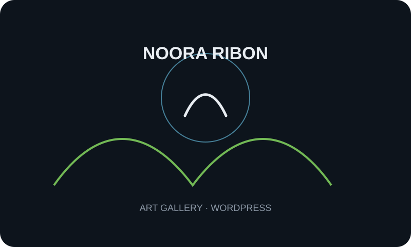
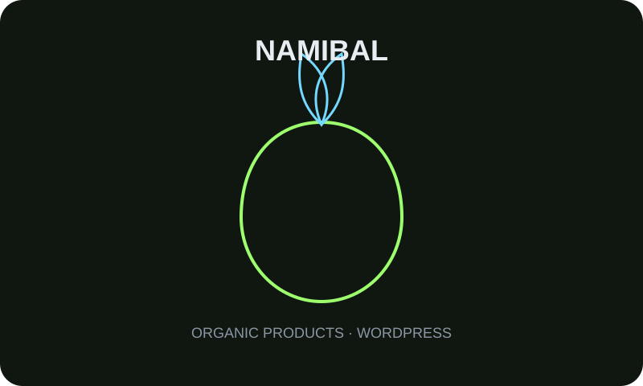
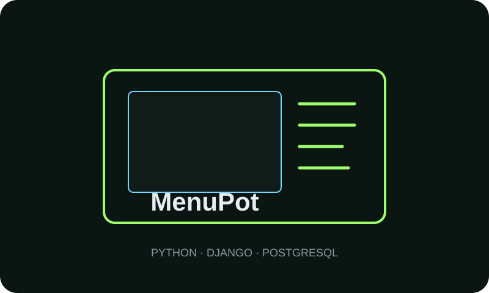
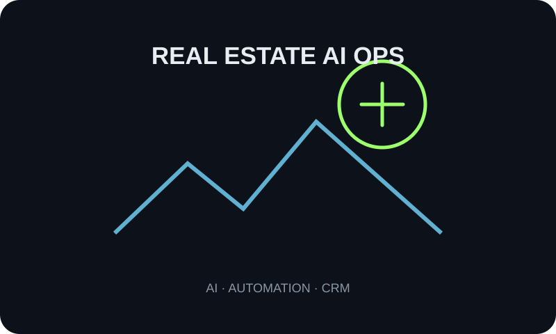
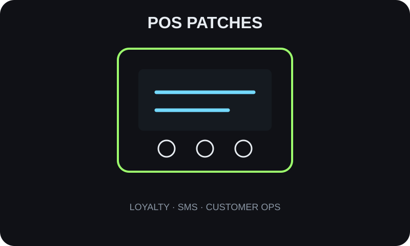

01
Backend
Business logic, authentication, admin systems, APIs and backend applications.
Software developer and product builder focused on Python, Django, PostgreSQL, APIs, WordPress and automation — with the ability to understand business problems and turn them into working systems.
$ whoami
Mohammad Namdar
$ focus --now
backend systems · APIs · automation
$ stack --core
Python / Django / PostgreSQL
WordPress / Git / REST APIs
n8n / AI workflows
$ mindset
build → measure → improve
▋
ABOUT
I’m a software developer who looks beyond code: the business problem, the workflow and the outcome are part of the solution.
My professional experience started in 2020 (1399 SH), with a focus on building real systems for businesses — from websites and online sales to admin panels, APIs, automation and operational tools.
My core focus is backend and product development. I also use WordPress when speed matters, and PostgreSQL/SQL when the product depends on reliable data.
STACK
Business logic, authentication, admin systems, APIs and backend applications.
Relational data modeling, querying and reporting around reliable application data.
Fast business websites, CMS builds and custom web experiences.
Connecting services, reducing manual work and prototyping AI-assisted workflows.
Version control and repeatable development workflows.
def build(problem): system = simplify(problem) solution = ship(system) return improve(solution)
EXPERIENCE
Building practical systems, APIs, admin panels, automation and data-driven tools with a problem-first, business-aware approach.
Founder & Full-stack Developer. Built the product end-to-end, from the idea to production, to solve the need for a fast, simple, affordable and extensible digital menu.
Developing a product direction that turns repetitive real-estate consultant processes into structured, automated and measurable workflows.
SELECTED WORK
Every project started from a real constraint — from sales and service delivery to café operations and business automation.

A service and commerce website for online courses and physical products. Digital automation and service delivery for 800+ students contributed to 45% student growth and a smoother payment and access process.
Visit website↗
An online store for Namibal honey and organic products, focused on a practical e-commerce experience and product content management.
Visit website↗
A hosted online-menu platform for cafés and restaurants with a custom admin panel, menu analytics, offers and pop-ups, social banners, landing pages, inventory control and custom business automations.
Visit product↗
A product in development for structuring and automating repetitive real-estate consultant workflows — from lead handling and follow-up to internal tools and intelligent workflows.
Current project↗
Complementary scripts for café and restaurant sales systems such as SepidZ, adding capabilities such as dynamic loyalty programs, SMS, customer interaction, discount control and operational extensions.
Internal / custom↗ENGINEERING NOTE
The goal isn’t to write more code. It’s to make the system simpler, more useful, and harder to break.— MN / 2026